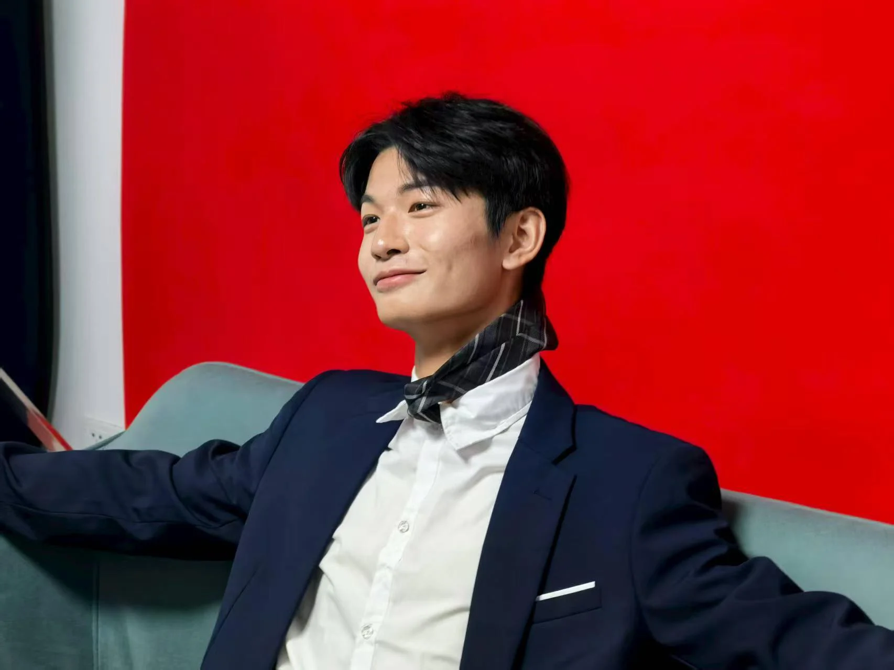
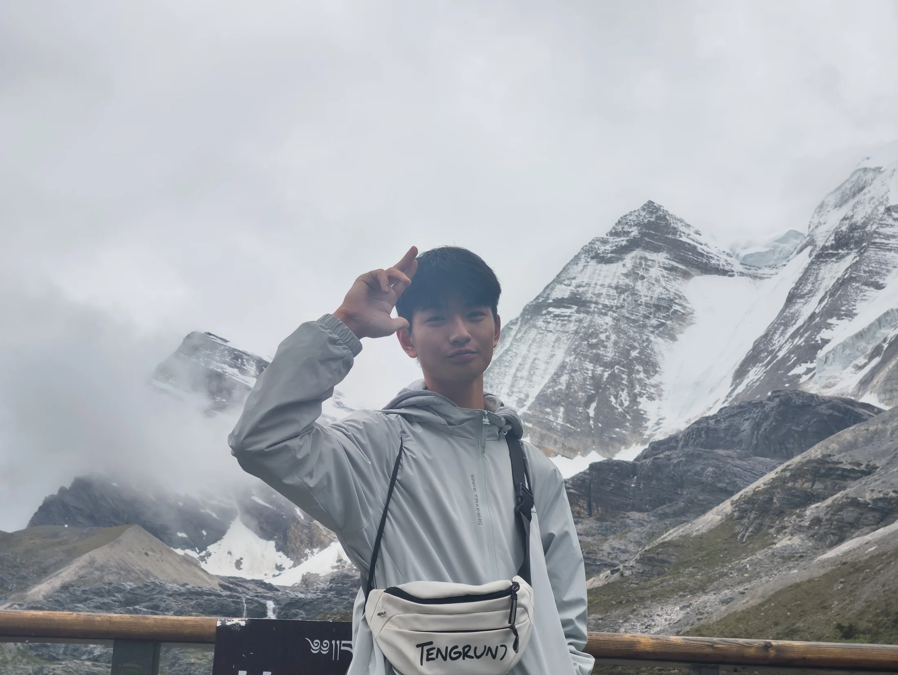

＋
THE MAIN CHARACTER IS ME.SCROLL TO EXPLORE ↓照片 192 / 影像 21生活没有边界，领域由我定义。
01 / THE MEMORY COSMOS拖动 · 旋转 · 发现
我有一个
很野的宇宙。
有山野，有人海。
有认真耍帅，也有快乐失控。
每颗星，都是一个回不去的瞬间。
拖动旋转 / 点击打开 / 滚轮靠近

OUTSIDE THE FRAME人生旷野，
A MOMENT, A WHOLE WORLD. / 袁野人生旷野，
尽兴就好。
不必给每一帧意义。
我在场，我开心，我记得。
02 / MORE THAN ONE SIDE我的世界，不止一种底色
03 / MOTION PICTURES声色俱在，记忆开场
私人放映室↗
照片之外，
还有会呼吸的瞬间。
全部 21 部 / 点击播放，保留原声
04 / THE COMPLETE ARCHIVE每一份记忆，都在这里
全部珍藏。
213个瞬间
一个袁野